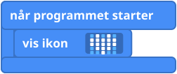

Det skal du lave
Du skal skrive et lillebitte program, teste det på som-om-micro:bit'en på skærmen og derefter sende det til din rigtige. Når det virker, viser din micro:bit et hjerte.
Det skal du bruge
- En computer med en webbrowser
- Din micro:bit og dens USB-kabel
Sådan gør du
- Gå ind på makecode.microbit.org og klik på Nyt projekt (New Project). Giv det et navn, for eksempel "Mit hjerte", og klik på Opret (Create).
- Kig på skærmen. Til venstre er en som-om-micro:bit. I midten er listen med bloktyper. Til højre er arbejdsområdet, hvor du bygger dit program.
- Klik på Grundlæggende (Basic) i listen. Find blokken vis ikon (show icon), og træk den ind i blokken når programmet starter (on start). Den klikker på plads, sådan her:

- Kig på som-om-micro:bit'en. Der kommer et hjerte frem! Du har skrevet et program.
- Send det nu til din rigtige micro:bit. Sæt micro:bit'en i computeren med USB-kablet, og klik på Download. Hvis programmet ikke selv kommer over på micro:bit'en, så kopiér den fil, der blev downloadet, over på drevet, der hedder MICROBIT. Din micro:bit viser hjertet.
Udfordring
- Klik på hjertet i din blok, og vælg et andet ikon. Prøv tre forskellige!
- Bonus: brug blokken vis LED'er (show leds) (den ligger også i Basis), og klik på de små firkanter for at tegne dit eget billede. Hvilket lys er (2, 2)? Se LED-gitteret, hvis du har glemt det.
Koden skrevet som tekst
Klik på fanen JavaScript i MakeCode for at se dit program skrevet som tekst. Du kan også vælge Python i menuen ved siden af.
JavaScript: basic.showIcon(IconNames.Heart) Python: basic.show_icon(IconNames.HEART)
Lærernoter
- Tid: cirka 20 minutter plus udfordringen.
- Det lærer de: en hændelse (når programmet starter / on start), at køre et program på en rigtig enhed, og LED-displayet på 5 x 5.
- Hvis der ikke sker noget på micro:bit'en: nogle USB-kabler kan kun lade op og ikke overføre data, så prøv et andet kabel. En blok, der ikke sidder fast inde i når programmet starter, bliver ikke kørt.
- Download: i nogle browsere kan MakeCode sende programmet direkte til micro:bit'en. I andre gemmer den en fil, som skal kopieres over på MICROBIT-drevet.
- Billedet af blokkene er en forenklet tegning. De rigtige blokke i MakeCode ser lidt anderledes ud.